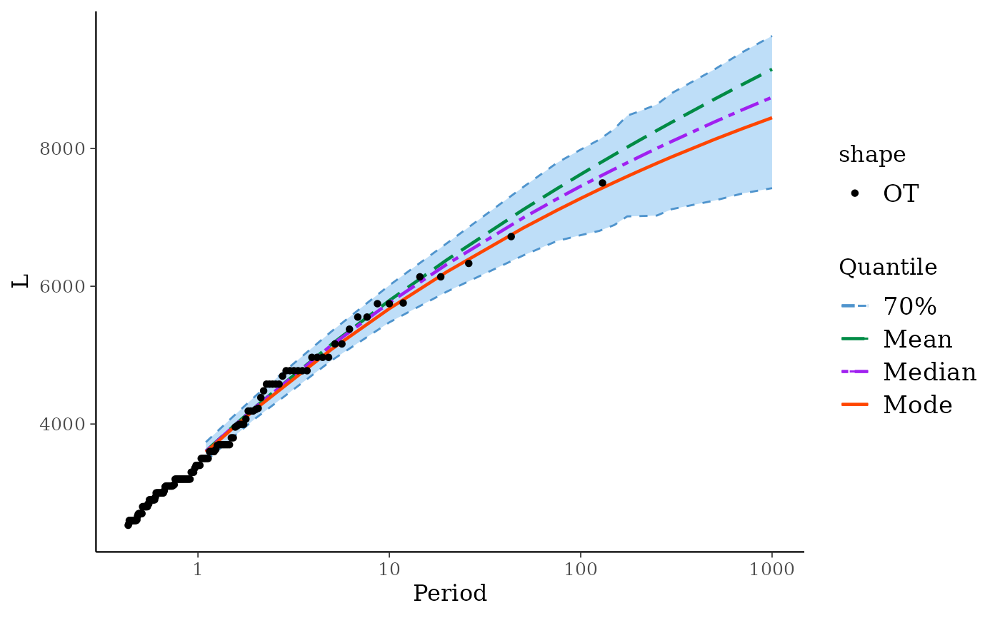

Return Levels and Credible Intervals for a Poisson-GP Model
RL.poisGPBayes.RdCompute return levels along with credible bounds for a Poisson-GP model with Bayesian inference results.
Arguments
- object
An object with class
poisGPBayesrepresenting the inference results for a Poisson-GP model.- period
A vector of periods for which the return levels will be computed.
- level
The credible level.
- credintType
The type of credible interval wanted. See
credInt.- smooth
Logical. If
TRUEthe bounds of the credible intervals are smoothed against the period.- ...
Not used yet.
Details
Three return levels are computed, named "mode",
"median" and "mean" in relation to the posterior
distribution of each return level. The column "mode" does
not contain the value of the marginal mode of the return levels,
but rather the modal curve obtained by plugging the MAP parameter
into the quantile function. This leads to a smooth curve; the
value for a given probability or period is (usually slightly)
different from the posterior marginal mode.
See also
The RL generic function.
Examples
fit <- poisGPBayes(data = Garonne$OTdata$Flow,
threshold = 2500,
effDuration = Garonne$OTinfo$effDuration)
#> Warning: 'threshold' is smaller than the smallest observation
## Return Levels
RL(fit)
#> Period Level Mode Median Mean L U
#> 1 1.1 70% 3592.394 3603.911 3606.748 3466.008 3736.945
#> 2 1.5 70% 3923.980 3942.152 3945.891 3791.835 4089.107
#> 3 2.0 70% 4219.318 4246.208 4250.229 4083.324 4408.038
#> 4 5.0 70% 5086.744 5146.918 5159.344 4924.794 5347.140
#> 5 10.0 70% 5674.916 5759.889 5792.397 5476.151 6013.576
#> 6 20.0 70% 6210.312 6319.849 6384.222 5922.979 6624.648
#> 7 50.0 70% 6845.062 6992.438 7111.184 6446.589 7438.863
#> 8 75.0 70% 7101.729 7266.585 7414.997 6655.948 7789.478
#> 9 100.0 70% 7275.464 7452.794 7624.519 6741.866 7984.086
#> 10 125.0 70% 7405.632 7590.196 7783.772 6803.596 8128.583
#> 11 150.0 70% 7509.101 7701.225 7911.863 6889.853 8284.769
#> 12 175.0 70% 7594.609 7793.219 8018.787 7014.605 8476.873
#> 13 200.0 70% 7667.248 7871.921 8110.420 7018.116 8534.135
#> 14 250.0 70% 7785.736 8003.018 8261.562 7026.596 8638.852
#> 15 300.0 70% 7879.921 8105.028 8383.273 7119.806 8805.737
#> 16 500.0 70% 8131.734 8385.530 8716.233 7243.966 9147.718
#> 17 700.0 70% 8288.320 8562.494 8929.494 7347.437 9398.449
#> 18 1000.0 70% 8446.687 8743.316 9150.718 7424.324 9633.922
autoplot(fit)
#> Warning: Since 'data' has class "potData" the formal arguments 'effDuration', 'nOT', 'MAX.*' and 'OTS.*' are ignored
#> Warning: 'threshold' is smaller than the smallest observation
#> Scale for x is already present.
#> Adding another scale for x, which will replace the existing scale.
